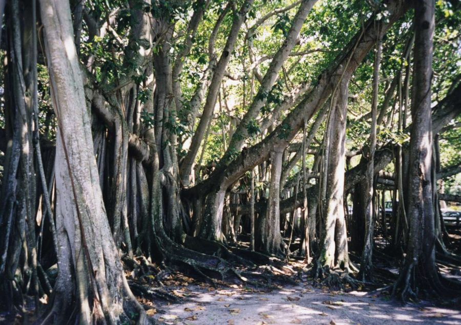

बरगदBanyan
Ficus benghalensis · Moraceae · FLR-0010

- Scientific name
- Ficus benghalensis L.
- Family
- Moraceae
- Hindi
- बरगद / वट वृक्ष
- Status here
- native
- IUCN
- LC
When to look कब देखें
Present all year.
बरगद / Banyan
Ficus benghalensis L. — Moraceae
बरगद — अपनी विशालकाय छतरी के फैलाव से पूरे भारत का राष्ट्रीय वृक्ष। कोलकाता का प्रसिद्ध बरगद लगभग डेढ़ हेक्टेयर क्षेत्र को कवर करता है; पूर्वी उत्तर प्रदेश में भले ही ये थोड़े छोटे हों, पर इनका स्वभाव समान है: एक अकेला पेड़ अपनी हवाई जड़ों (जटाओं) को नए तनों में बदलकर एक बड़े जंगल का रूप ले लेता है। दूसरे पेड़ों की शाखाओं पर एक मामूली बीज के रूप में जीवन शुरू करने वाला यह परजीवी अंततः पूरे परिवेश को अपनी बाहों में समेट लेता है।
Quick Identification त्वरित पहचान
| Feature | Description |
|---|---|
| Size & Canopy | Large to massive evergreen tree (20–30 m tall) with a wide-spreading, umbrella-like canopy spanning 30–50+ m |
| Aerial Roots | Numerous cord-like roots hanging from horizontal branches, dropping to the ground to form supportive wooden pillars |
| Leaves | Large (10–20 cm long), oval to elliptic, leathery, dark green; base rounded, leaf tip is blunt or obtuse |
| Drip-Tip | Entirely absent; the leaf tip is rounded rather than elongated into a tail (distinguishes it from peepal) |
| Fruit (Figs) | Small (1–2 cm diameter) spherical syconia in axillary pairs, green ripening to a bright, glossy orange-red |
| Latex | Abundant white milky sap that flows immediately from any broken leaf or cut bark |
Field tip: Any massive, broad-crowned village tree with large, leathery, blunt-tipped leaves and thick aerial root pillars hanging down from its branches to prop them up is a Banyan. The absence of a long tail-like pointed tip (drip-tip) on the leaf separates it instantly from the Peepal.
Morphology आकारिकी
Biometrics (typical measurements in the Gangetic plain):
| Feature | Measurement |
|---|---|
| Tree height | 20–30 m |
| Canopy spread | 30–60+ m |
| Leaf length | 10–20 cm |
| Leaf width | 7–13 cm |
| Fig diameter | 1.0–2.0 cm |
Habit: Massive evergreen tree with extraordinary lateral spread through prop roots. Original trunk may become indistinguishable from hundreds of prop-root pillars in very old trees. No hard size limit — the Great Banyan of Kolkata, over 250 years old, has 3,500+ prop roots.
Bark: Smooth, pale grey to whitish. Large trees develop rough, flaking bark on the original trunk.
Leaves: 10–20 cm long, 7–13 cm wide, broadly ovate to elliptic. Base rounded or slightly cordate (heart-shaped). Tip obtuse (blunt, not pointed) — key distinction from peepal. Leathery, glossy, deep green above, slightly paler below. Petioles 2–5 cm.
Aerial roots / prop roots: Thin fibrous roots grow from the undersides of branches, elongate toward the ground, and on contact with soil thicken into woody prop roots that eventually resemble independent trunks. A single tree can produce hundreds of these over centuries.
Figs: 1–2 cm, globose, in axillary pairs or small clusters. Green ripening to orange-red to bright red when fully ripe. Each fig contains hundreds of tiny flowers and is pollinated by the specific fig wasp Eupristina masoni.
Latex: White, abundant. More copious than peepal; flowing freely from any wound.
हिंदी: पत्ती का टिप गोल है — पीपल जैसी पतली पूँछ नहीं — यही सबसे ज़रूरी फर्क।
हवाई जड़ें शाखा से ज़मीन तक — मोटी होकर नए तने बन जाती हैं।
लाल पके फल: जोड़े में, 1–2 सेमी।
The Fig–Fig Wasp Mutualism अंजीर और अंजीर-मक्खी का सम्बंध
This is one of the most extraordinary co-evolutionary partnerships on Earth, and it operates inside every banyan fig — invisibly.
The banyan "fruit" is not a fruit at all. It is an inverted flower cluster — a hollow chamber with hundreds of tiny flowers lining the inside walls. The opening (ostiole) is tiny — barely visible.
Pollination by fig wasps: Banyan is pollinated by Eupristina masoni. The female wasp squeezes through the ostiole, pollinates the internal flowers, and lays her eggs inside some of them, dying inside. The offspring develop inside, mate, and the females collect pollen and exit to locate new figs, repeating this evolutionary cycle.
The Strangler Strategy परपोषी को दबाने की रणनीति
Banyan begins life as a hemi-epiphyte — its seeds are deposited by birds in the branches or bark cracks of other trees. The young banyan starts there:
Stage 1: Grows from the host's branch, sending roots down the host's trunk.
Stage 2: Roots reach the ground and thicken. The banyan begins to compete with the host for light (above) and water/nutrients (below).
Stage 3: Roots fuse around the host's trunk, forming a living cage. The host tree is girdled — its own bark cannot expand and it is progressively starved.
Stage 4: The host dies and rots away. The banyan "shell" stands independently, a hollow tube of aerial-root pillars where the host once was.
This is more aggressive than peepal. Peepal epiphytes often coexist with their hosts; banyans usually kill theirs. The strategy is evolutionarily successful — the banyan gets an immediate head-start in the canopy while establishing.
हिंदी: बरगद अक्सर दूसरे पेड़ पर उगता है। धीरे-धीरे उस पेड़ की छाल के चारों तरफ जड़ें लपेट देता है।
जड़ें फैलने के साथ मेज़बान पेड़ का रस-मार्ग बंद होने लगता है — वह पेड़ मर जाता है।
बरगद उस पेड़ की जगह खड़ा हो जाता है — यही उसकी रणनीति है।
Ecological Role पारिस्थितिक भूमिका
Fruit food source: Banyan figs are a critical food resource. The red ripe figs are eaten by:
- Indian Flying Fox and other fruit bats (major seed dispersers)
- Asian Koel, Rose-ringed Parakeet, Common Myna
- Hill Myna (where present), Hornbills (historically), Barbets
- Rhesus and Bonnet Macaques (where present)
- Many small passerine birds
Roost tree: Banyan canopy is the premier roosting structure for Indian Flying Foxes (Pteropus medius) — large colonies of hundreds to thousands roost communally in banyan canopy in eastern UP. This is the primary mammal-tree mutualism: bats disperse seeds, banyan feeds bats.
Bird diversity hotspot: A large banyan supports more bird species simultaneously than almost any other village tree — the multiple prop-root pillars, dense canopy layers, and fig abundance create layered microhabitats.
Shade and microclimate: The largest banyans create their own local microclimate — cool, humid, and dim. Ground-foraging birds (pond herons, mynas) and reptiles (garden lizards, rat snakes) concentrate beneath the canopy.
Cultural protection: Banyans are rarely cut in UP because of their sacred status (associated with Shiva and Vishnu; worshipped on Vat Savitri festival). This religious protection has preserved old trees that might otherwise have been cleared.
हिंदी: बरगद के लाल फल बहुत से पक्षी और चमगादड़ खाते हैं।
बड़े बरगद पर फल चमगादड़ (Pteropus medius) के झुंड डेरा डालते हैं — सैकड़ों से हज़ारों तक।
पवित्र होने के कारण काटा नहीं जाता — इसी से पुराने बरगद बचे हैं।
Life Cycle / Phenology जीवन चक्र
- Germination: From bird/bat-dispersed seeds; usually on a host tree or wall
- Growth rate: Moderate initially; accelerates dramatically once prop roots establish and the tree begins lateral expansion
- Lifespan: 200–500+ years; exceptional specimens may be over 1,000 years old
- Evergreen: Does not shed all leaves seasonally; new bronze leaves appear March–April as old leaves are replaced
- Fruiting: April–June (main flush); may have smaller secondary fruiting
- Prop root formation: Continues throughout life; old banyans continuously produce new prop roots
हिंदी: बरगद 200–500 साल और उससे अधिक जी सकता है।
हरा रहता है साल भर।
अप्रैल–जून में लाल फल।
उम्र के साथ नई-नई हवाई जड़ें बनती रहती हैं।
Agricultural / Human Relevance कृषि और मानव संबंध
Shade and meeting place: Village banyans with their wide canopy and multiple prop roots have traditionally served as gathering places — community meetings, panchayat sessions, rest stops for travellers. The "bargad ki chhaon" (shade of the banyan) is a stock phrase for protection and belonging in Hindi.
Medicinal uses (traditional):
- Latex: applied to cracked heels, skin inflammations, toothache (placed on gum)
- Bark: decoction for diabetes, diarrhoea; astringent
- Aerial roots: chewed like datun (less common than neem but used)
- Leaf buds: applied to wounds
Timber: Rarely harvested — the irregular, multi-trunked form makes clean timber extraction difficult. Prop roots sometimes used for handles and walking sticks.
Negative aspects:
- Prop roots and wide lateral root spread can crack roads, pavements, and drainage channels
- Extremely difficult to remove once established — roots penetrate deeply; cutting triggers new prop root formation
- Falling branches from very large canopies in storms are a hazard
हिंदी: पुराने बरगद गाँव की पंचायत, बैठक, और विश्राम की जगह रहे हैं।
"बरगद की छाँव" — यह कहावत सुरक्षा और अपनेपन का प्रतीक है।
इसकी जड़ें सड़क और नाली को नुकसान पहुँचा सकती हैं।
Expected Locally स्थानीय रूप से अपेक्षित
Not a field record. Written from published accounts for eastern Uttar Pradesh. No confirmed local sighting yet — if you have seen it, that is what the atlas needs.
अभी तक स्थानीय पुष्टि नहीं। यह विवरण प्रकाशित स्रोतों से है, किसी अवलोकन से नहीं।
A landmark tree species in Basti district, with large specimens situated along traditional transport routes and near rural marketplaces. The hanging roots are used recreationally by village children as swings. Flying fox colonies (Pteropus medius) are commonly observed roosting in several mature banyans in the district, especially near large village ponds.
Distribution वितरण
Global range: Native to the Indian subcontinent (India, Pakistan, Bangladesh, Nepal) and Sri Lanka; widely introduced throughout the tropics as an ornamental and shade tree.
In India: Found across the country, wild in tropical and subtropical moist and dry forests, and extensively planted in agricultural fields, road margins, and rural hubs.
In Uttar Pradesh: Extremely common across all districts, planted as a sacred and shade tree along major roads, village squares, and temple compounds.
In Basti district / eastern UP: Common year-round in every village chowk, temple yard, and along old roads throughout the district.
Range notes: High longevity means individual trees stand for centuries.
Research Questions शोध प्रश्न
Anyone can investigate these | कोई भी इन प्रश्नों की जाँच कर सकता है
- How many prop roots does the oldest banyan in your village have? / आपके गाँव के सबसे पुराने बरगद में कितनी हवाई जड़ें हैं? — Count and map them. Track over years to see new root formation.
- How many Indian Flying Foxes roost in a local banyan? / बरगद पर कितने चमगादड़ रहते हैं? — Count at dusk as they leave to feed; repeat seasonally. Bat roost size tracks fruiting productivity.
- Are young banyans growing on any tree in your area? / क्या आपके क्षेत्र में किसी पेड़ पर युवा बरगद उग रहा है? — Document the host tree, the banyan's size, and stage of the strangling relationship.
- Which birds visit a fruiting banyan in one hour? / एक घंटे में फल लगे बरगद पर कौन से पक्षी आते हैं? — Timed surveys, repeated across different fruiting seasons.
- Is your village banyan older or younger than village memory? / आपके गाँव का बरगद कितना पुराना है? — Interview the oldest residents. Cross-reference with satellite imagery (Google Earth historical) for canopy change over time.
Similar Species मिलती-जुलती प्रजातियाँ
| Species | How to tell apart | हिंदी |
|---|---|---|
| Peepal (Ficus religiosa) | Long drip-tip on leaf; no prop roots; smaller overall | पीपल — पत्ती पर पूँछ; हवाई जड़ें नहीं |
| Cluster Fig (Ficus racemosa) | Figs borne on trunk and branches, not on branchlets; no prop roots | गूलर — तने पर अंजीर |
| Pakar (Ficus virens) | Leaves smaller, narrower; no prop roots; figs white-green | पाकड़ |
Field rule: Large figs with hanging prop-root pillars + oval blunt-tipped leaves + red paired figs + found in village or temple setting = banyan. The prop roots are unique among common UP trees.
Taxonomy & Classification वर्गीकरण
Original description. Ficus benghalensis was described by Carl Linnaeus in 1753 in Species Plantarum, vol. 2, p. 1059. Type locality: Bengal, India. The genus name Ficus is the classical Latin name for fig, while benghalensis refers to its native origin in Bengal.
Subspecies. Monotypic — no subspecies are currently recognised.
Family and order placement. Placed in the order Rosales, family Moraceae (mulberry or fig family). It belongs to the large genus Ficus, which features unique pollination systems involving specialized fig wasps.
Phylogenetic notes. Ficus benghalensis is placed in the subgenus Urostigma (strangler or prop-root figs), section Urostigma, subsection Conosycea. It is closely related to other large-leaved strangler figs. No major taxonomic controversies are active.
IUCN status rationale. Evaluated as Least Concern (LC). Culturally protected and widely planted throughout South Asia, the species is highly secure, although some mature specimens in rural UP are vulnerable to infrastructure expansions.
Photo Gallery फोटो गैलरी
References संदर्भ
- Linnaeus, C. (1753). Species Plantarum. Laurentius Salvius, Holmiae.
- Corner, E.J.H. (1965). Check-list of Ficus in Asia and Australasia. Gardens' Bulletin Singapore, 21: 1–186.
- Shanahan, M. et al. (2001). Fig-eating by vertebrate frugivores: a global review. Biological Reviews, 76(4): 529–572.
- Hooker, J.D. (1885–1887). Flora of British India, Vol. 5. Reeve & Co., London.
- Botanical Survey of India — Flora of Uttar Pradesh.
- The Great Banyan, Acharya Jagadish Chandra Bose Indian Botanic Garden — world record canopy spread documentation.
- GBIF Occurrence Data — Ficus benghalensis records (2010–2024).
Source file: species/flora/trees/banyan.md